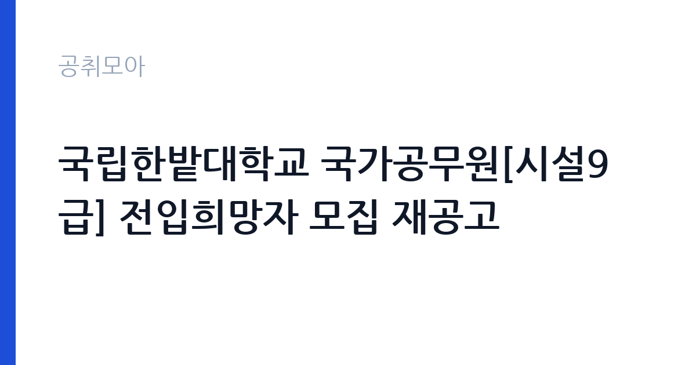

[국가기관] 국립한밭대학교 국가공무원[시설9급] 전입희망자 모집 재공고
국립한밭대학교 · 대전 · 마감 2026-10-14 (D-13) · 출처 나라일터

한눈에 보는 모집 조건
| 기관 | 국립한밭대학교 |
|---|---|
| 공고명 | 국립한밭대학교 국가공무원[시설9급] 전입희망자 모집 재공고 |
| 고용형태 | 정규직 |
| 근무지 | 대전 |
| 게시일 | 2026-10-02 |
| 마감일 | 2026-10-14 (D-13) |
지원자격, 이렇게 읽으세요
- 시설9급 1명
- 접수 ~2026-10-14 마감
- 세부 조건은 원문 공고문 확인
지원자격의 핵심은 현직 국가공무원 신분입니다. 시설직렬 9급으로 재직 중이어야 하며, 소속 기관장의 전출 동의가 필요합니다. 전출 동의는 지원 전에 미리 협의해 두셔야 접수 막바지에 차질이 없습니다. 징계 처분을 받았거나 승진임용 제한 기간에 해당되시면 전입이 제한될 수 있습니다. 시설직렬에는 건축과 토목, 전기, 기계 등 세부 직류가 있으므로, 본인의 직류가 한밭대학교에서 필요로 하는 분야와 맞는지 원문 공고문에서 확인하셨습니다. 세부 조건은 원문 공고문에 따릅니다.
이 공고의 포인트
이 공고의 포인트는 세 가지입니다. 첫째, 필기시험 부담이 없습니다. 전입은 서류 심사와 면접 중심으로 진행됩니다. 둘째, 호봉과 경력이 그대로 인정됩니다. 신규 임용과 달리 기존 호봉을 유지한 채 옮기므로 보수 손실이 없습니다. 셋째, 국립대학 근무의 안정성입니다. 한밭대학교는 대전 유성구에 위치한 국립대학으로, 시설직 공무원은 교사동과 실험실습동, 기숙사 등 캠퍼스 시설 전반을 관리합니다. 재공고라는 점도 눈여겨보실 대목입니다. 1차에서 적격자가 없었다면 이번에는 서류 준비를 갖춘 지원자가 유리합니다.
전형은 어떻게 진행되나
전형은 나라일터를 통한 접수 후 서류 심사와 면접으로 진행될 것으로 보이며, 정확한 전형 단계와 제출 서류는 원문 공고문에서 확인하셔야 합니다. 전입 심사에서 중요한 것은 전입 사유의 타당성과 직무 적합성입니다. 왜 한밭대학교로 옮기려 하는지, 기존 기관에서 쌓은 시설관리 경험이 한밭대학교에서 어떻게 발휘될 수 있는지를 설명하셔야 합니다. 제출 서류에는 재직증명서와 경력 관련 서류, 전출 동의 관련 서류 등이 포함될 수 있으니 미리 준비하셨습니다.
이런 분께 추천해요
- 시설직렬 9급 국가공무원으로 재직하면서 대전 근무를 희망하시는 분
- 학교나 공공청사 등 건축물 시설관리 경력을 보유하신 분
- 필기시험이 아닌 경력 중심 심사로 소속을 옮기길 고려하시는 분
지원 전 체크리스트
- 본인이 전입 가능한 직렬과 직급, 직류에 해당하는지 원문에서 확인하셨습니다
- 소속 기관장의 전출 동의 가능 여부를 사전에 협의하셨습니다
- 징계나 승진제한 등 결격 사유가 없는지 점검하셨습니다
- 마감일 10월 14일 이전에 제출 서류를 완비하셨습니다
모집 일정과 제출 타이밍
게시일은 2026년 10월 2일, 마감일은 10월 14일입니다. 접수 기간이 2주 정도로 넉넉해 보이지만, 전출 동의 협의와 각종 증명서 발급에 시간이 걸리므로 접수 막바지로 미루지 마시고 소속 기관 협의부터 먼저 진행하시기 바랍니다. 재공고 건은 추가 연장 없이 마감될 수 있으니 일정 관리에 유의하셨습니다.
직무 이해하기: 국가기관
국립대학 시설직 공무원은 캠퍼스 내 건축물과 설비를 유지관리하는 실무를 담당합니다. 교사동과 실험실습동, 도서관, 기숙사의 전기와 기계, 소방 설비를 점검하고, 노후 시설 보수 공사의 발주와 감독 업무를 수행합니다. 예산 범위 안에서 긴급 보수를 판단하고 시공 업체를 관리하는 현장 대응력이 중요합니다. 방학과 학기 중 업무 강도가 달라지는 학사 일정에 맞춘 연간 유지보수 계획을 세우는 것도 시설직의 역할입니다. 한밭대학교는 공학 계열 실험실습동이 많은 대학이라 관련 설비 경험이 있으면 실무 적응에 도움이 됩니다.
자기소개서 작성 팁
전입 지원서에서 가장 중요한 항목은 전입 사유입니다. 단순히 근무지를 옮기고 싶다는 표현이 아니라, 본인의 시설관리 경력과 한밭대학교의 시설 현황을 연결해 쓰셨습니다. 예를 들어 노후 교사동 리모델링 경험이나 에너지 절감 설비 교체 경험처럼 대학 캠퍼스에 바로 적용 가능한 실적을 구체적으로 적으셨습니다. 대전 연고나 정주 계획이 있으시다면 장기 근무 의지를 함께 밝히시는 것이 좋습니다. 전입 동기가 개인 편의가 아니라 기관 기여와 연결되도록 구성하셨습니다.
면접 준비 포인트
면접에서는 실무 대응 능력을 묻는 질문이 중심이 됩니다. 강의동 누수나 정전 같은 긴급 상황에 어떻게 대응했는지, 보수 공사 발주 시 업체 선정과 하자 관리 기준은 무엇인지를 구체적으로 설명하셨습니다. 국립대학 특유의 예산과 회계 절차, 조달청 나라장터 이용 경험이 있으시다면 강점이 됩니다. 전입 후 포부에서는 캠퍼스 시설 개선 아이디어를 한두 가지 준비해 가셨습니다. 전출 기관의 기밀 사항은 언급하지 않도록 유의하셨습니다.
급여·근무조건 읽는 법
보수는 국가공무원 시설9급 봉급표가 적용되며, 전입자는 기존 호봉이 그대로 인정되므로 경력에 따라 실제 수령액이 달라집니다. 참고로 2026년 공무원 보수는 전 직급 총보수 3.5% 인상이 기본이며, 7급부터 9급 초임은 추가 인상으로 최대 6.6% 수준까지 인상됐습니다. 정부가 산정한 9급 초임 보수는 연 3,428만원, 월평균 약 286만원 수준입니다(2026년 공무원 보수 정리 보도 기준). 전입자는 초임이 아니라 본인 호봉이 적용되므로 실제 연봉은 이보다 높습니다. 수당과 상여를 포함한 개인별 보수액은 한밭대학교 담당 부서에서 확인하셨습니다.
자주 묻는 질문
- 신규채용 시험과 무엇이 다른가요
전입은 현직 국가공무원만 지원할 수 있는 소속 이동 제도입니다. 공개경쟁시험처럼 필기시험을 치르지 않고 서류 심사와 면접으로 적격자를 가립니다. 수험생은 지원할 수 없으니, 일반 9급 공채를 준비하시는 분은 별도 시험 일정을 확인하셨습니다. - 전출 동의는 언제 받아야 하나요
소속 기관장의 전출 동의가 전제 조건이므로 지원 전에 기관 내부 절차를 먼저 협의하셔야 합니다. 동의 없이 지원했다가 나중에 발각되면 불이익을 받을 수 있으니, 인사 담당 부서와 사전에 상의하시기 바랍니다. - 재공고라는 것은 무슨 의미인가요
1차 모집에서 적격자가 없거나 합격자가 임용을 포기했을 때 조건을 그대로 다시 내는 경우가 많습니다. 지원 문턱이 낮아졌다고 보기보다는, 서류를 갖춘 지원자에게는 경쟁 부담이 줄어든 기회로 보시는 것이 정확합니다.
함께 보면 좋은 공고
[국가기관] 방위사업청 공무직근로자(통신원) 채용 공고 — 마감 2026-10-20[국가기관] 새만금개발청 일반임기제 공무원(행정6급, 투자유치B) 경력경쟁채용시험 재공고 — 마감 2026-10-12[국가기관] 2026년 제3차 호남권질병대응센터 기간제 근로자 채용 공고 — 마감 2026-10-12출처: 나라일터 공개정보를 바탕으로 공취모아가 정리한 안내글입니다. 모집 조건·일정은 변경될 수 있으니 지원 전 반드시 원문 공고문을 확인하세요. 본 글은 정보 제공용이며 합격을 보장하지 않습니다.